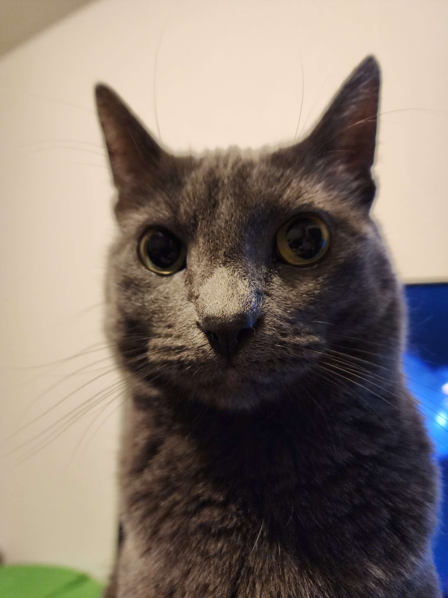

Ben Bonus
I'm Ben. I grew up in Coeur d'Alene, Idaho. When I was very young, I was heavily into video games. Not only did I love playing them, but I wanted to make them. So even at a young age, I have had a passion for computers; I knew I wanted to pursue computer science.Video games were a motivation for me to learn, and because of that I have been learning programming since as early as middle school. Over the years, I have worked on various projects. Now, I am attending North Idaho College, and am in my second year. I am also currently a research and development intern for Agency Software.